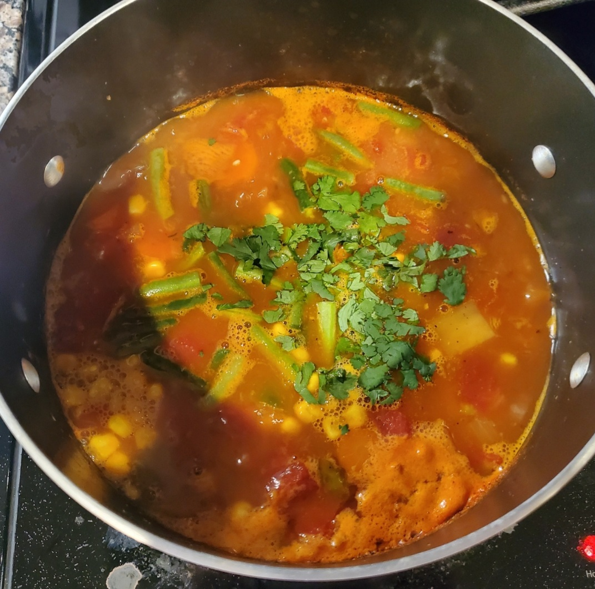

.
Chicken Veggie Soup

Description
This chicken vegetable soup is full of shredded chicken, vegetables and potatoes, all in a savory tomato broth.
An easy and healthy dinner option that the whole family will love!
Ingredients
- 1 tablespoon butter
- 1/2 cup onion finely diced
- 2 carrots peeled, halved lengthwise and sliced
- 2 stalks celery thinly sliced
- 2 teaspoons minced garlic
- 3 cups cooked chicken shredded or cubed
- salt and pepper to taste
- 15 ounce can diced tomatoes do not drain
- 8 ounce can tomato sauce
- 1 teaspoon Italian seasoning
- 6 cups chicken broth
- 1 large Russet potato peeled and cut into 1/2 inch cubes
- 1/2 cup frozen corn
- 1/2 cup diced green beans fresh or frozen
- 2 tablespoons chopped fresh parsley
Servings
- 20 minute prep time
- 35 minute cook time
- 55 minute total cook time
- Serves 6
How to Prepare
- Melt the butter in a large pot over medium high heat. Add the onion, carrots and celery to the pot.
- Cook for 5-6 minutes or until softened. Add the garlic and cook for 30 seconds more. Season with salt and pepper to taste.
- Add the chicken, tomatoes, tomato sauce, Italian seasoning, chicken broth and potato to the pot; bring to a simmer.
- Cook for 20-25 minutes or until potatoes are tender. Taste and add salt and pepper as desired.
- Stir in the corn and green beans and cook for 5 minutes more. Sprinkle with parsley and serve.
Nutrition Information
Calories: 284kcal | Carbohydrates: 24g | Protein: 21g | Fat: 12g | Saturated Fat: 3g | Cholesterol: 58mg | Sodium: 762mg |
Potassium: 1010mg | Fiber: 3g | Sugar: 5g | Vitamin A: 3820IU | Vitamin C: 32.8mg | Calcium: 78mg | Iron: 3.2mg
Recipe obtained from: Dinner at the Zoo
.